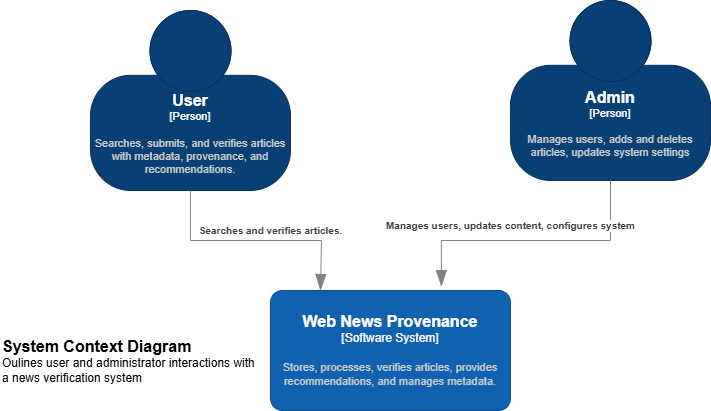
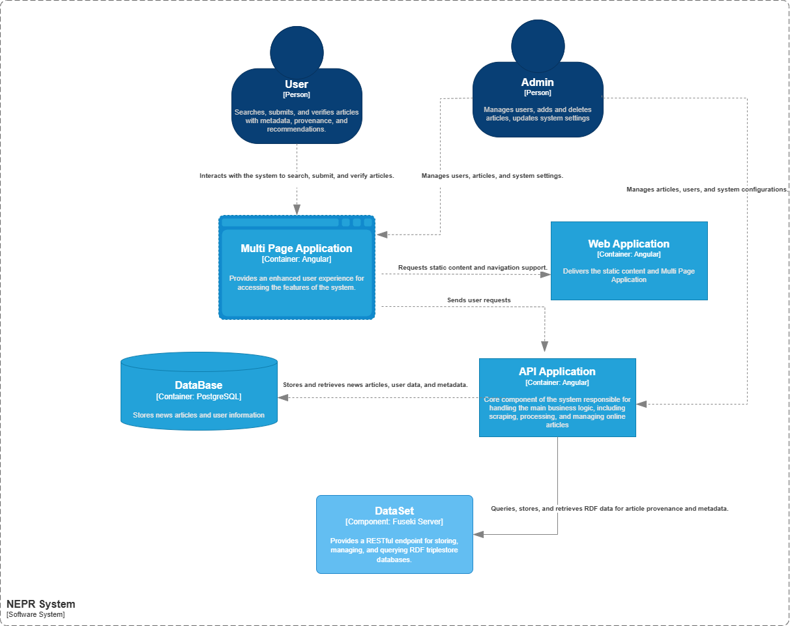
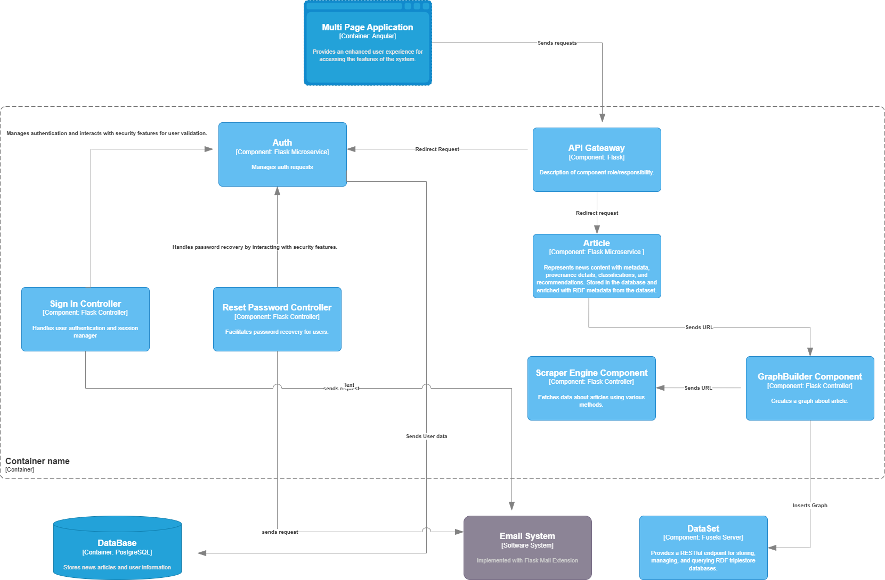
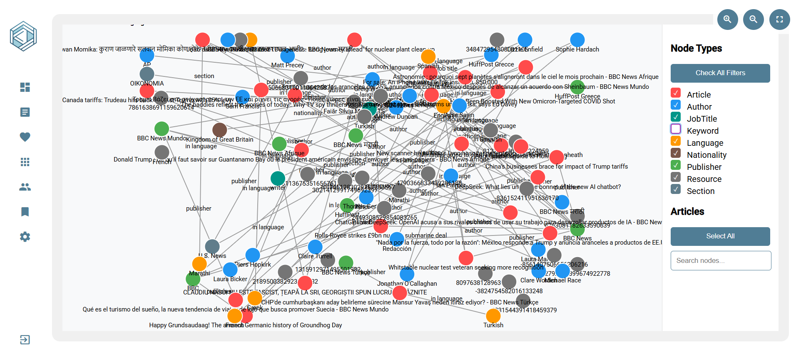
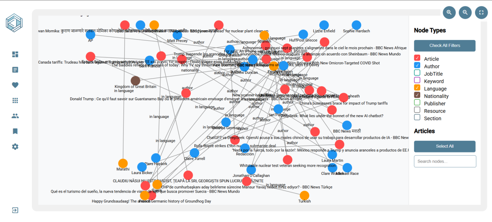
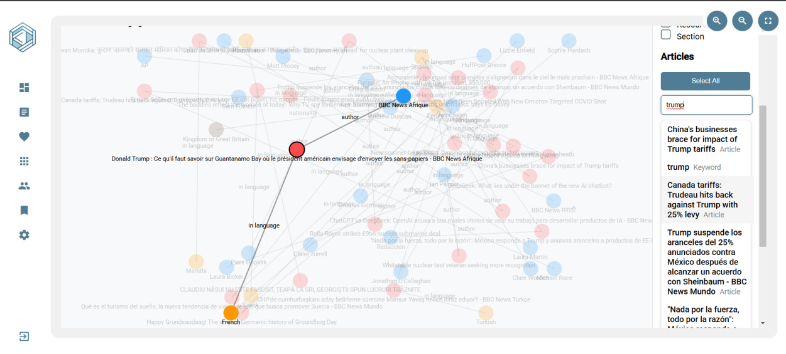

NePr is an innovative web platform designed to revolutionize news content tracking, providing comprehensive provenance management for digital journalism. By integrating advanced metadata techniques, microservices architecture, and semantic web technologies, the project offers unprecedented insights into news article origins, transformations, and contextual information.
Project Motivation
In an era of information overload and potential misinformation, NePr addresses critical challenges:
Tracking the complete lifecycle of news articles
Providing transparent source verification
Enabling comprehensive content analysis
Supporting multi-format and multilingual news content
Technical Architecture
Microservices Design
The project leverages a microservices architecture to ensure:
High scalability and modularity
Independent deployment of service components
Flexible technology stack integration

Technology Stack
Backend: Flask (Python)
Lightweight and flexible web framework
Supports rapid development of API endpoints
Easy integration with multiple extensions
Robust routing and request handling
Frontend: Angular
Component-based architecture
Reactive programming model
Strong typing with TypeScript
Efficient dependency injection

Metadata and Semantic Integration
Comprehensive metadata support through:
DCMI (Dublin Core Metadata Initiative) for standardized metadata
ITPC Standards for media content classification
Social Semantic Web Thesaurus for advanced categorization
External knowledge graph integration via:
DBpedia for structured information
Wikidata for extensive entity relationships

SPARQL Endpoint Capabilities
Advanced querying capabilities including:
RDFa and JSON-LD support
Creative Work concept from schema.org
Complex query scenarios such as:
Listing recent editorials on specific topics
Filtering articles by language and length
Discovering investigative journalism content
System Architecture and API Structure
The system implements a REST architectural style using the Flask framework in Python, with a well-organized modular structure.
The API is divided into four main controllers, each handling specific functionality domains:
The implemented knowledge model demonstrates a sophisticated approach to representing article metadata
through a hierarchical class structure based on Schema.org vocabulary. The model's foundation
lies in the CreativeWork class, which serves as the base for more specialized content types.
This design choice enables flexible content representation while maintaining semantic consistency across
different types of creative works.
Key Components of the Model
Base Classes and Inheritance
CreativeWork (Base Class)
Contains common metadata: abstract, dates, language info
Manages relationships with authors, editors, and publishers
Handles basic media references (audio, video, thumbnails)
The model implements a comprehensive approach to representing different types of entities involved in content
creation and publication. This system shows particular sophistication in handling both individual and
organizational actors.
Entity Classes
Person
Biographical data: birth/death dates, places
Professional info: affiliation, jobTitle
Personal details: gender, nationality
Contact information: email, address
Organization
Basic details: name, address
Publishing principles
Organizational relationships
Role-Based Entity Classifications
Author (can be Person or Organization)
Editor (always Person)
Publisher (can be Person or Organization)
Multimedia Content Handling
The system implements a sophisticated approach to multimedia content representation through a hierarchical
structure. This design enables consistent base attributes while allowing for media-specific properties.
Media Class Hierarchy
MediaObject (Base Class)
Common properties: contentUrl, duration, dimensions
Basic embedding support
Upload date tracking
Specialized Media Classes
AudioObject: Adds transcript support
VideoObject: Adds quality metrics, director info
ImageObject: Handles embedded captions
External Knowledge Integration
The model demonstrates practical application of linked data principles through integration
with external knowledge bases. This is particularly evident in:
Wikidata Integration Features
Person enrichment (biographical data)
Organization details enhancement
Publishing principles lookup
Professional background information
Practical Implementation Considerations
The implementation reveals careful attention to real-world usage requirements and practical deployment needs.
The code includes robust error handling and logging mechanisms, indicating consideration for production environments.
Strengths
Schema.org vocabulary ensures broad compatibility
Flexible attribute handling through optional fields
Strong support for multimedia content
Rich entity relationship modeling
Use of external data/knowledge sources
The solution demonstrates a sophisticated approach to handling external data sources and knowledge
management through its SPARQLService implementation. The system employs a pragmatic
architecture for managing and querying article data while adhering to linked data principles.
In terms of knowledge integration, the solution implements a robust SPARQL querying system that interfaces
with a Fuseki endpoint, allowing for flexible and powerful data retrieval. This is particularly
evident in the recommendation system implementation, which combines multiple data sources to generate
personalized article recommendations. The get_recommendations method demonstrates how the system
leverages user history and article metadata to create contextually relevant suggestions.
Adherence to Linked Data Principles
The solution strongly adheres to linked data principles in several ways:
Use of HTTP URIs for naming entities, as seen in the article URLs and resource identifiers.
Implementation of RDF and Schema.org vocabularies for data representation.
Establishment of meaningful links between different pieces of content through the graph structure.
Provision of standardized SPARQL endpoint access for data retrieval.
SPARQL Query Capabilities
The SPARQL queries implemented in the system show particular sophistication in several areas:
Advanced Search Capabilities
The advanced_search method implements complex SPARQL queries that support multiple
search criteria, including keywords, word count, language, author information, and publication dates.
The query construction dynamically adapts to provided parameters, creating efficient and targeted searches.
Semantic Relationship Handling
The system manages complex relationships between entities like authors, publishers, and articles.
The populate_article_data method demonstrates how nested relationships are handled
and transformed into structured JSON data.
Multilingual Support
The recommendation system is designed to work across multiple languages, as evidenced by the
language-agnostic implementation of the get_recommendations method.
The TF-IDF vectorization uses character-level n-grams to maintain effectiveness across different languages.
Graph Management
The create_graph and insert_graph methods showcase how the system manages
RDF graph creation and storage.
The GraphBuilder integration demonstrates proper handling of JSON-LD and RDFa data.
Complex Query Handling
The implementation of SPARQL queries shows particular sophistication in handling complex data relationships
and filtering. The query structure efficiently manages relationships between entities, supports advanced
filtering, and optimizes data retrieval from the knowledge graph.
Project Inspirations
Design and conceptual inspirations:
Europeana Stories: Digital cultural heritage approach
The London Gazette: Historical document tracking
Future Development Roadmap
Short-Term Goals
Enhanced AI-driven content classification
Improved multilingual support
More sophisticated provenance tracking algorithms
Long-Term Vision
Machine learning-based source credibility scoring
Advanced recommendation systems
Expanded semantic web integration
Use Case: Exploring and Analyzing Graph Data
Objective
A user wants to explore and analyze relationships within RDF-based graph data using the graph visualization tool.
Steps to Use the Graph Visualization Tool
1. Accessing the Page
The user navigates to the graph visualization page, where the interface is split into three main sections:
the graph container, filter panel, and search functionality.

Figure 1: Initial Data Graph Representation
2. Viewing the Graph
The central graph area displays nodes (representing entities) and edges (showing relationships).
The user sees a structured visualization of data where different node types are color-coded.

Figure 2: Intermediate Relationship Mapping
3. Interacting with the Graph
The user can zoom in, zoom out, and reset the view using the buttons in the graph controls section.
Clicking and dragging allows panning across the graph for better visibility.
4. Filtering Node Types
The user views the filter panel on the right and sees available node types.
They can toggle all filters on/off or select specific types to focus on certain entities.
The graph updates dynamically based on the selected filters.
5. Searching for Specific Nodes
The user types a keyword into the search bar to find a particular node.
Matching results appear below the search input.
Clicking on a search result highlights the node and its connections in the graph.

Figure 3: Final Knowledge Graph Integration
6. Exploring Relationships
The user selects a node by clicking on it, which highlights all connected nodes and relationships.
The graph fades unrelated nodes, making it easier to analyze direct and indirect relationships.
Use Case: Viewing and Managing Recommended and History Articles
Objective
A user wants to explore their history and recommended articles using the dashboard, interact with the content, and manage favorites.
Steps to Use the Dashboard
1. Accessing the Dashboard
The user navigates to the main dashboard page, which includes two key sections:
History Card (<app-history-card>) displaying previously accessed articles.